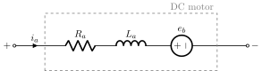
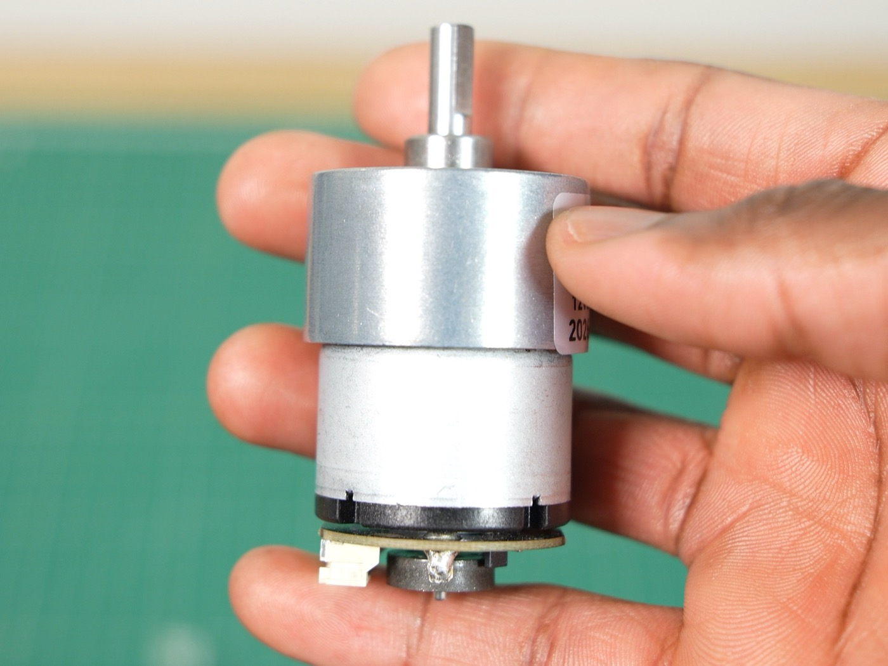
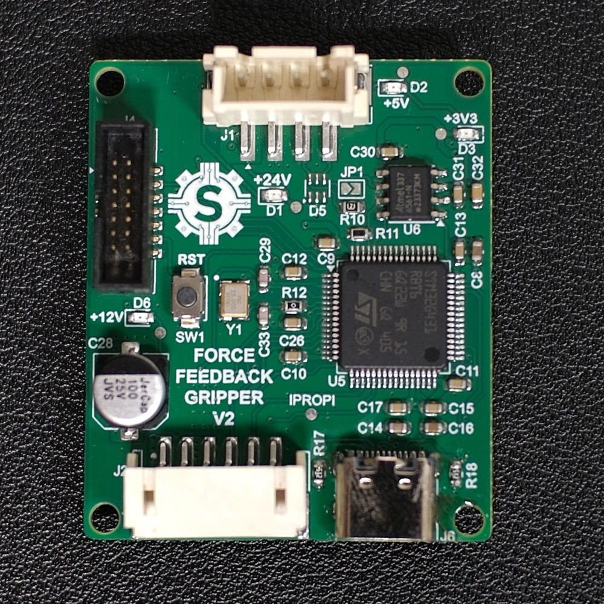
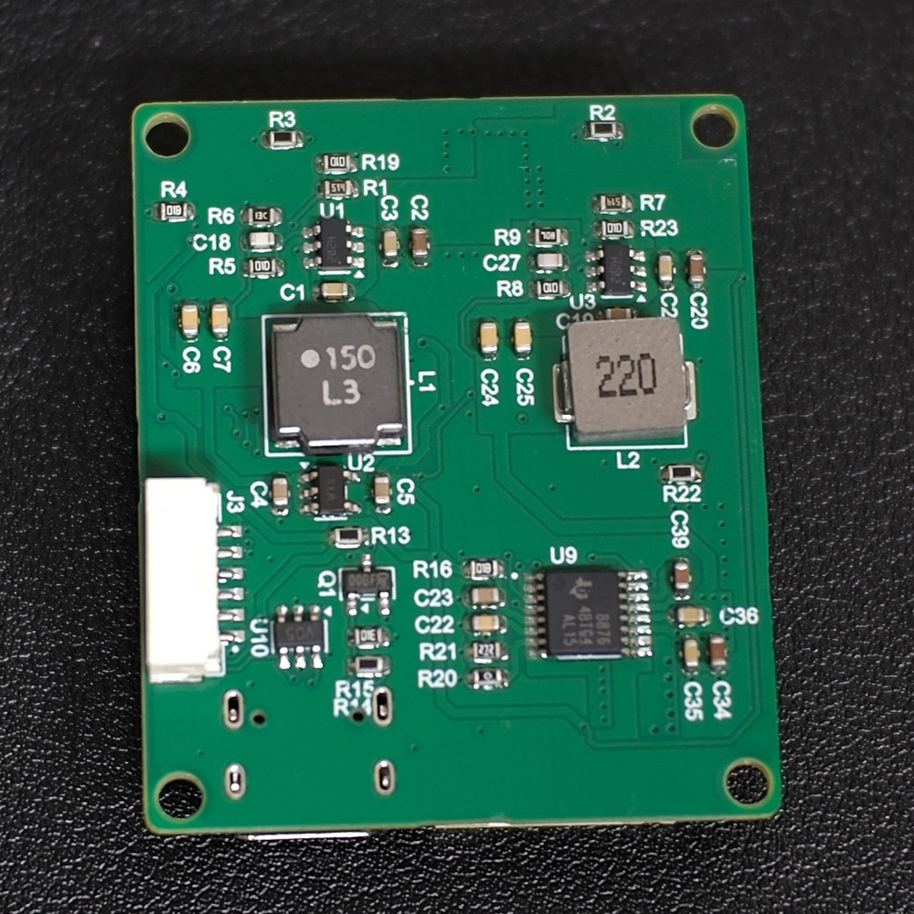
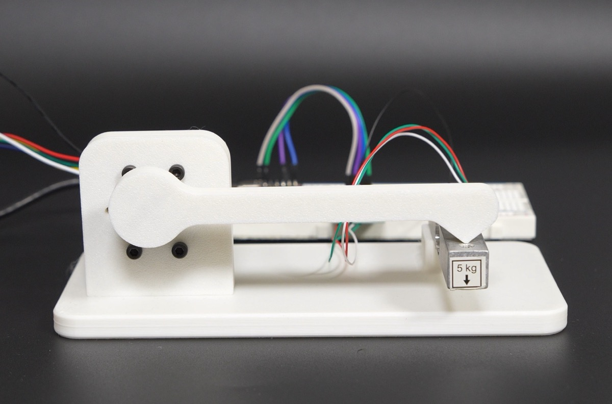
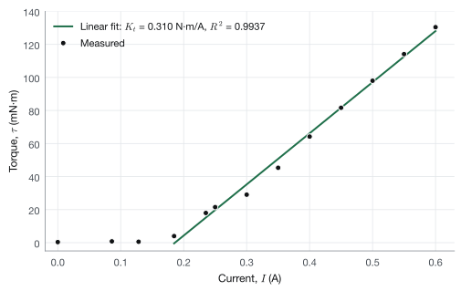

Overview
This robot gripper isn’t like other DIY grippers. It controls exactly how hard it squeezes, so it can firmly grip something rigid like a 3D-printed cube or something as fragile as a potato chip. The best part of this project is that this gripper cost us under $40 to make. Force-controlled grippers typically cost $100 or more. The reason ours is so cheap comes down to the motor I chose and how I drive it.
Background
Most DIY grippers use the hobby servos found in Arduino kits; these servos are connected to a mechanism to convert the angular motion to linear motion to open and close the gripper. Because of how these servos are controlled, you can only command position, not force. The servo pushes as hard as it can to reach the commanded position, so the grip force isn’t something you control.
Grippers that can control force usually go a completely different route: they use a BLDC motor driven by an FOC controller. That gives you torque control, which is what we're after, but a good FOC driver is expensive, and that drives up the cost of the whole gripper.

In spring 2026, I took an electric drives course where I learnt about different motors and how they work. During a lab on PI control of DC motors, I thought to myself, “I think I can use a DC motor for a force-controlled gripper.” That’s how this project started.
Controller Design
DC motors can be modeled as a resistor in series with an inductor and a voltage source (back EMF). The torque generated by the motor is a function of the current flowing through the motor. And so, by regulating the current passing through the motor, we can control the torque it generates, which would allow us to control the gripping force.

The issue is that since the back EMF depends on the motor's rotational speed, applying a constant voltage to the motor results in different current values at different speeds, so we need to design a controller for it.
Selecting the Controller Gains
The controller has three loops: a current loop on the inside, a speed loop around it, and a position loop on the outside. The current loop is the fastest, and each loop outside it is about 10 times slower. This lets us tune one loop at a time, since from the point of view of an outer loop, the inner loop responds almost instantly and can be treated as a gain of 1.
We also left out the gain of the PWM stage. The output of the current controller is treated as the voltage applied to the motor, \(V_a\). In the firmware, this voltage is converted to a duty cycle by dividing it by the measured bus voltage, \(d = V_a/V_d\), so the PWM stage just looks like a gain of 1 to the controller.
Current Controller
Writing KVL around the motor in the Laplace domain gives \(V_a(s) = (R_a + sL_a)\,I_a(s) + E_a(s)\). The back EMF changes a lot slower than the current, so we treat it as a disturbance and leave it out of the model. This leaves us with a first-order transfer function:
This is a type 0 system, so a proportional controller alone would leave some steady-state error. The integral term fixes this since it keeps acting until the error is zero, so we use a PI controller.
The open-loop transfer function is:
To pick the gains, we place the zero of the PI controller on top of the motor's pole so that the two cancel out, \(k_{iI}/k_{pI} = 1/\tau_e\). This gives us a formula for \(k_{pI}\):
But \(k_{pI}\) still depends on \(k_{iI}\), so we are not done yet. After the cancellation, the open-loop transfer function becomes a simple integrator:
An integrator has a phase of \(-90^\circ\) at every frequency, so the phase margin is \(90^\circ\) no matter where the crossover frequency ends up. To find \(k_{iI}\), we set the magnitude of the open-loop transfer function to 1 at the crossover frequency \(\omega_{cI}\), which gives us both gains:
In a real system, things like the PWM update delay and the current sensor filter add some phase lag that gets worse at higher frequencies. So to keep a healthy phase margin, we place the crossover frequency 1 to 2 decades below the switching frequency.
Speed Controller
For the speed loop, we pick a crossover frequency about 10 times lower than the current loop. This lets us treat the current loop as a gain of 1, so going from the current command to speed is just the torque constant divided by the inertia:
The open-loop transfer function is:
We can't use pole-zero cancellation here. The pole is at the origin, so placing the PI zero there would cancel out the integral term. Instead, we pick a crossover frequency \(\omega_{c\omega}\) and a phase margin \(\phi_{pm}\), and use them to set up two equations at \(s = j\omega_{c\omega}\). The phase equation gives:
and the magnitude equation gives:
Solving these two equations gives us the gains:
A phase margin of around \(60^\circ\) is a good starting point.
Position Controller
The position loop is again about 10 times slower than the speed loop, so the speed loop is treated as a gain of 1. Going from speed to position is just an integration, so the system already has an integrator in it and won't have any steady-state error. This means a proportional controller is enough:
Setting the magnitude to 1 at the crossover frequency gives us the gain:
This is also an integrator, so just like the current loop, the phase margin is \(90^\circ\).
If you want to learn more about DC motors or any other type of electric motor, Electric Drives: An Integrative Approach by Ned Mohan is a good book to read.
Hardware Design
I chose the JGB37-520 DC motor from AliExpress. It comes with a gearbox since the torque generated by the DC motor by itself is weak. It also has an incremental encoder, which I use to obtain the position of the rotor.

For implementing the controller, I designed a custom PCB. The MCU is the STM32G431RBT6; it is responsible for running the PI controller. It generates the PWM signal that is fed into the motor driver to vary the voltage across the motor terminals. The motor driver I chose for this was the DRV8876PWPR. I chose it because it reports the current flowing through the motor by using a low-side current mirror. However, this has some limitations compared with a shunt resistor. The first issue is that current is only available when the low-side FETs are on. This really isn’t a problem because I make sure at least one of the low-side FETs is always on. The second issue is that it doesn’t measure negative current, so it can’t measure regenerative current (when the motor acts as a generator). Since the motor is stalled against the object while gripping, this issue is not that big of a deal.
To determine the angular position of the motor, I fed the incremental encoder signals into a timer on the STM32, so any time I want the position, I just read it from the timer.

Top
BottomTesting
To test the current controller, my brother designed a test rig that measures the stall torque of the motor using a lever arm and a load cell connected to an ESP32. This gave us a graph of motor current versus output torque, shown below.


From the results, the torque only starts to rise after ~150 mA. This is due to the friction in the gearbox. Once the current is enough to overcome the friction in the gearbox, there is a linear relationship between the current flowing through the motor and the torque produced. To correct for the friction, I added a dead zone to the controller.
Now we can move on to testing the velocity and position controllers. Below are the results.
Cost Breakdown
| Item | Unit cost | Quantity | Cost |
|---|---|---|---|
| PCB Components | $9.30 | 1 | $9.30 |
| PCB | $1.00 | 1 | $1.00 |
| JGB37-520 DC Motor | $12.18 | 1 | $12.18 |
| 100 mm Linear rail | $6.00 | 1 | $6.00 |
| Carriage | $4.00 | 1 | $4.00 |
| 3D printed parts | $12.00 | 0.25 | $3.00 |
| Flange Coupling | $1.00 | 1 | $1.00 |
| Total | $36.48 |
The total came to $36.48. There’s still room to cut cost on the PCB. The MCU I chose was way too powerful and expensive (it cost $5.81) for this simple DC controller. ST released a new line, the STM32C5 series. They are quite powerful, but they are also very cheap; they cost about $2, so they’d be a good alternative for this project. I stuck with the G4 because I’d already used it in my stepper motor drivers, so I could reuse a lot of that code.
Conclusion
In the end, we were able to successfully build a force-controlled gripper, and it worked better than I expected.